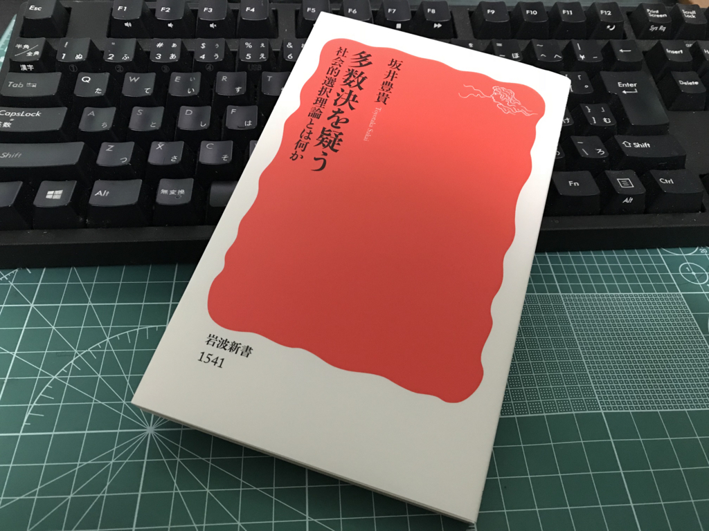
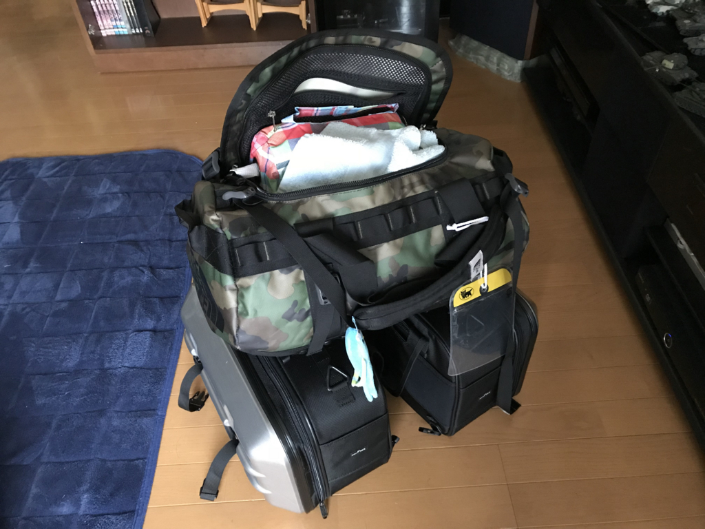
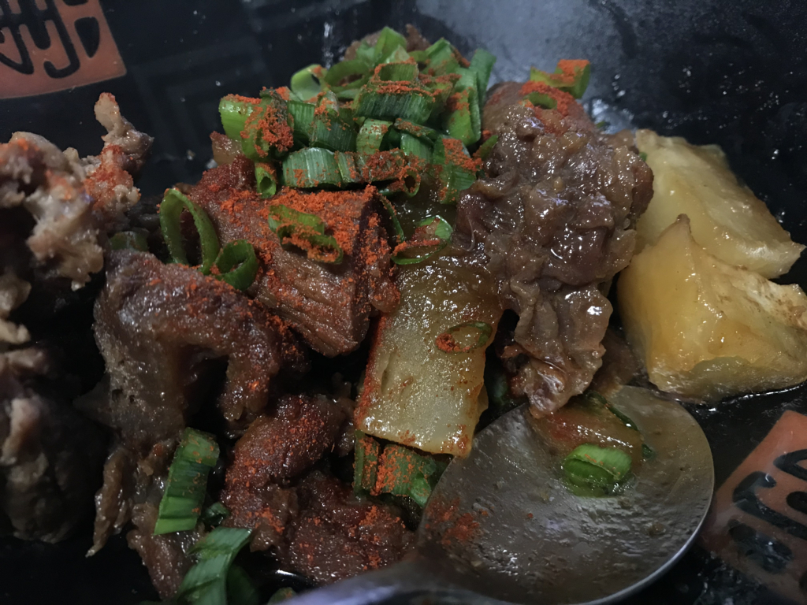

日記：ほとんどなにもしなかった
執筆日時：

――まず、最初に。先日の辛辛魚と一緒に、だと思うんだけど、本をいただきました。ありがとうございます。かわいい女の子が仲良くしてるだけのマンガばっかり読んでんじゃねーぞ！っていうお叱りの声だと思い、ありがたくいただきます。社会選択理論のいい復習になりそう？
")
- 作者: 坂井豊貴
- 出版社/メーカー: 岩波書店
- 発売日: 2015/07/16
- メディア: Kindle版
- この商品を含むブログを見る
ベランダキャンプは延期

今週末はベランダキャンプしようと思ってパッキングまでしていたのだけど、残念ながら雨が降るというので注意した。寒いのは覚悟の上だけど、さすがに雨の中やる気はなかった……。でも、パッキングしたおかげでいろいろ足りないものが発見できたのでよし。
折りたたみ椅子なんかも買っちゃって、カバンに全部入るかどうか心配だったけど、全部入れてもちょっと余裕がある。最悪、テントはカバンの外に出して括っちゃえば、カバンにスペースを作ることもできるので、食材を買って入れるのも不可能ではなさそう。来週は大阪へ行くので、再来週に予行演習して、その次の週はソロキャンプデビューしたい。
スジ肉煮込んだ
午前中ちょっとだけ仕事をして、午後からは1キロぐらいある冷凍謎肉――先日実施された調査の結果、牛スジ肉と判明――を煮込んだ。アクがすごいので2回ぐらいゆで汁を捨てて、目分量で醤油・みりん・日本酒・砂糖、あといろいろ少々をぶち込んだら、まぁまぁ、食べられる味になった。

午後は煮込んだスジ肉をつまみながら、ビールと Civilization 6 をたのしんだ。
そういえば Civ 6 の拡張パックが出たけど、今月はキャンプ用品で結構お金使っちゃったので自重。新しい拡張パックは黄金時代が帰ってくるみたいで、結構楽しみだ。